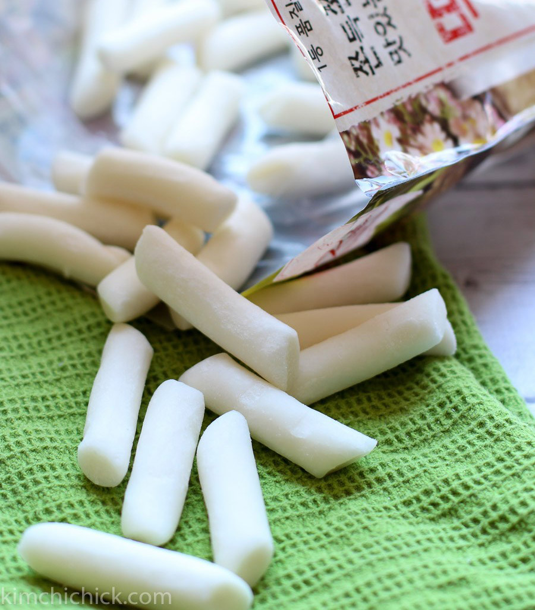
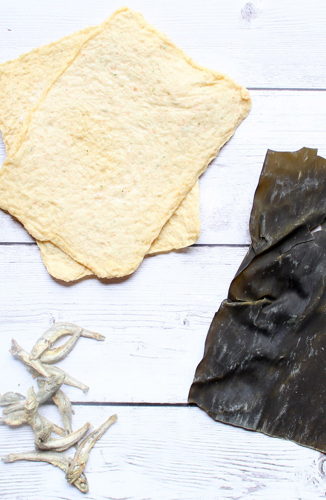
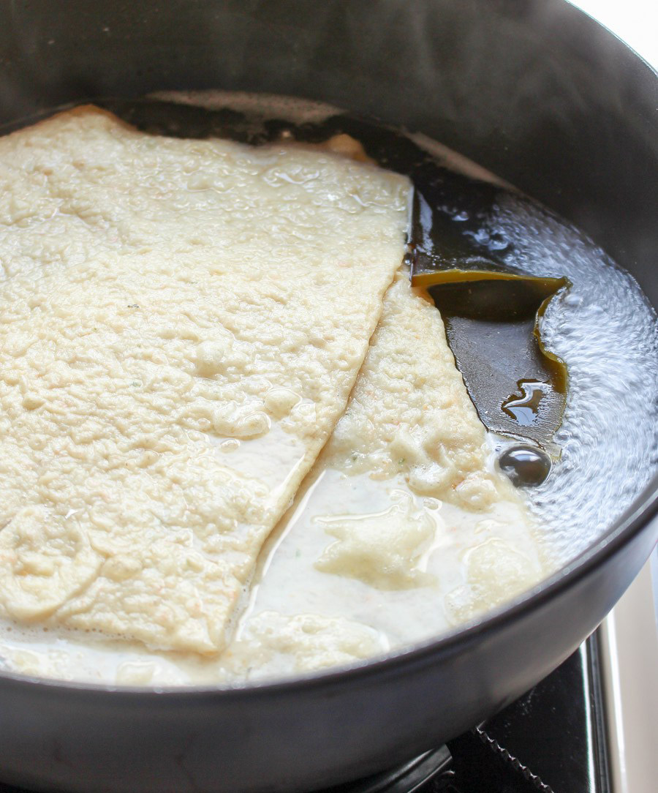
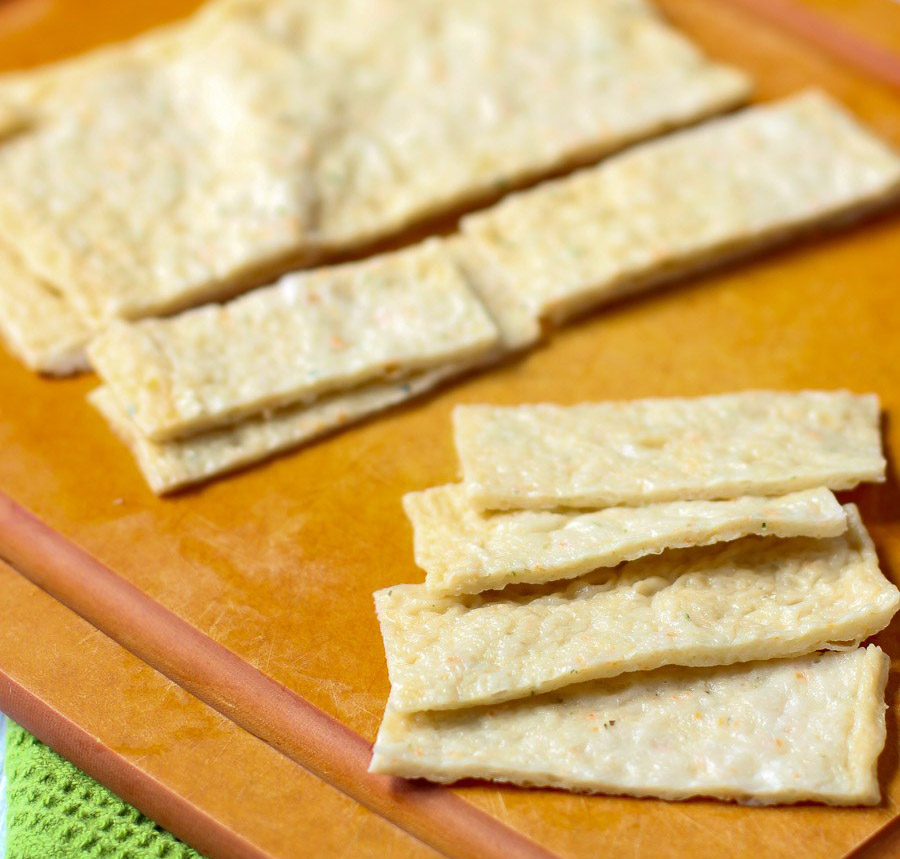
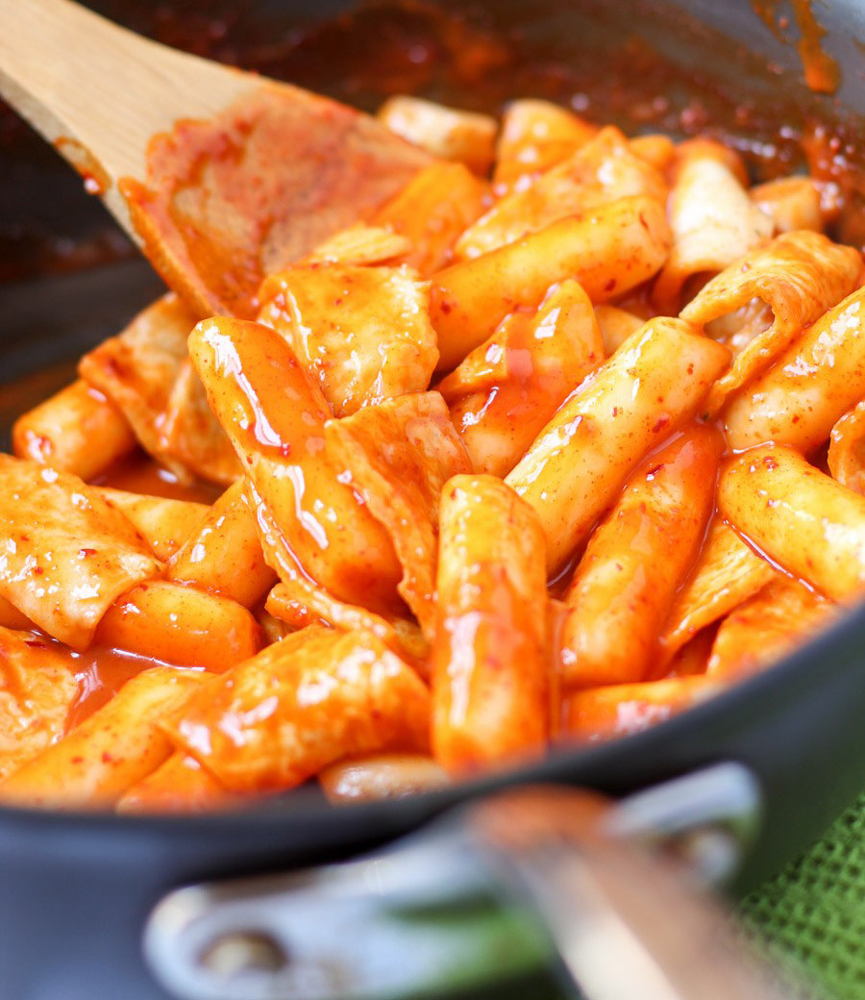

TASTY TTEOKBOKKI:
KOREAN SPICY RICE CAKES
PREP TIME
10 mins
COOK TIME
15 mins
TOTAL TIME
25 mins
SERVINGS
3-4
AUTHOR
KimchiChick
WHAT IS TTEOKBOKKI?
Tteokbokki is a popular Korean snack made up of chewy rice cakes and soft fish cakes in a spicy sweet chili sauce. It's easy to make, fun to share, and extremely addicting!
INGREDIENTS
1 pound (2 cups) cylindrical rice cakes
ANCHOVY STOCK
8 dried anchovies, remove head and intestines (black strip in belly)
1 sheet dried kelp (approx 6x4 inches)
2 fish cake sheets, thawed
4 cups water
SEASONING
2 Tbsp Gochujang (or more depending on your spice level)
½ Tbsp Gochugaru (Korean chili powder)
½ Tbsp granulated sugar
INSTRUCTIONS
1. Place rice cakes in hot water to saok for 15-20 minutes while anchovy stock is being made.  
2. Place dried anchovies, kelp, and fish cakes into 12 inch skillet. Add water and turn burner to high. When water begins to boil, turn heat to low simmer for 15 minutes.
3. Remove fish cakes and allow to cool. Then strain solids from stock and discard.
4. Measure 1 cup of stock and place back into 12 inch skillet. Keep remaining stock for future use later.
5. Turn heat to medium and add Gochujang, Gochugaru, and sugar. Mix to combine.
6. Then add rice cakes and stir frequently for 5 minutes. Sauce will begin to thicken. 
7. Cut fish cakes into 2x1 inch strips and add to skillet. Gently toss.
8. Serve with hard boiled egg (optional) and garnish with scallions and sesame seeds.
9. Enjoy!
NOTES
As the rice cakes cook, the sauce will thicken. You can always add reserved anchovy stock to liquify the sauce. Otherwise, keep in sealed container and refrigerate for up to 2 weeks.